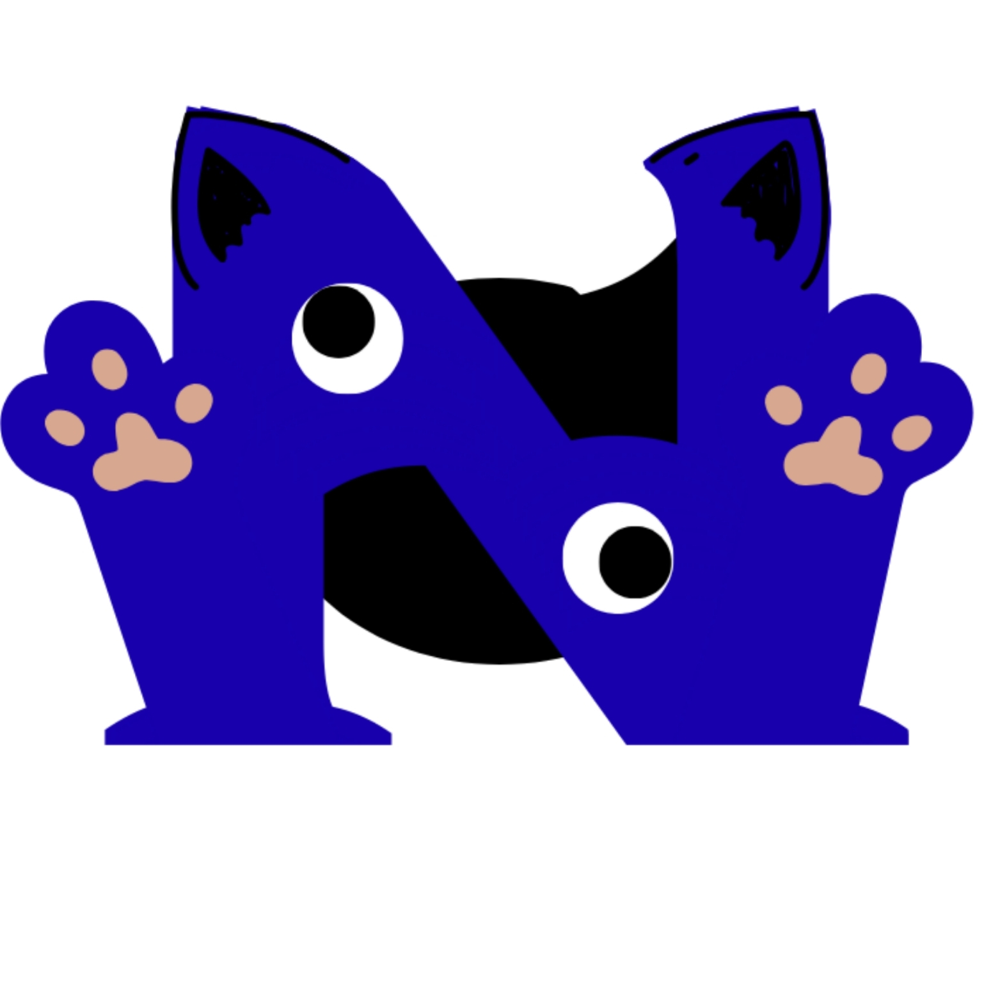
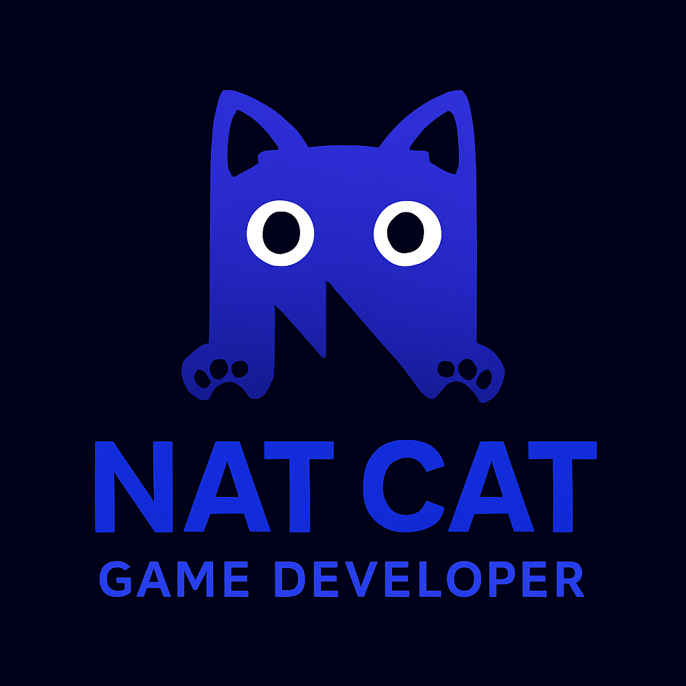

Ben Eyyüp Mutlu. 2011 doğumluyum, yani 14 yaşındayım. Kendimi geliştirmeyi seven, meraklı ve bir şeyler üretmekten keyif alan biriyim. Oyun tasarımı, kod yazma ve dijital projelerle uğraşmak hem beni eğlendiriyor hem de ileride yapmak istediğim şeyler için temel oluşturuyor. Büyük laflar etmeyi sevmem ama öğrenmeye karşı istekliliğime güvenirim. Bir sorunla karşılaştığımda vazgeçmek yerine çözüm aramayı tercih ederim. Tasarımda sade ve düzenli bir tarzı benimsiyorum. Yolun daha çok başındayım ama küçük adımların zamanla büyük işler ortaya çıkaracağına inanıyorum.
 